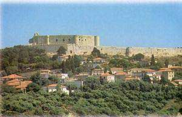

Κάστρο Χλεμούτσι
 Μετά την άλωση της Κωνσταντινούπολης (1204), δημιουργείται στην Πελοπόννησο το Πριγκιπάτο της Αχαΐας. Ο Γοδεφρείδος Βιλλεαρδουίνος και οι γιοι του θα κυβερνήσουν το πριγκιπάτο με έδρα τους την Ανδραβίδα (1230) και κάστρο τους το δυνατό Chateau Tournois, το σημερινό Χλεμούτσι (πιθανή παραφθορά του αρχαίου Χελωνάτα), πάνω στο οποίο θα στηρίξουν για αιώνες τη δόξα τους. Απρόσιτο και ισχυρό οχυρό για την ατείχιστη Ανδραβίδα, το κάστρο έλεγχε τα απέναντι νησιά και τις ακτές της Αιτωλοακαρνανίας. Εκεί λειτουργούσε το νομισματοκοπείο της Γλαρέντζας, όπου κόβονταν τα περίφημα τορνέζια νομίσματα. Επί τουρκοκρατίας αποτέλεσε έδρα του τούρκου βοεβόδα της περιοχής. Το 1825 ο Ιμπραήμ Πασάς πολιόρκησε το Χλεμούτσι. Από τότε ο φόβος για τον "αράπη" μπήκε στα παραμύθια της περιοχής για πολλές γενιές. Το Χλεμούτσι πέρασε από τον Ιμπραήμ στους Έλληνες το 1828, μαζί με όλα τα κάστρα του Μοριά, όταν μετά την επέμβαση των τριών μεγάλων δυνάμεων παραδόθηκαν στο γάλλο στρατηγό Μαιζόν. | ||